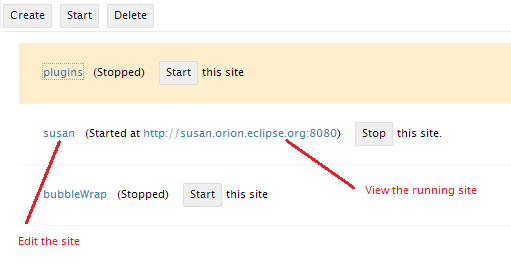

The Sites page allows you to manage sites used to test and deploy applications developed with Orion. To configure a new site, click Create in the tool bar. You can Start or Stop a site using the adjacent button in the site list. Clicking on the site name link will take you to the Edit Site page for that site.
You can also work with one or more sites by selecting them and using buttons in the toolbar. For example, you can start, stop, or delete groups of sites using this technique.
Once a site has been started, you can click the URL of the deployed site to view and test it.

This document is maintained in a collaborative wiki. If you wish to update or modify this document please visit http://wiki.eclipse.org/Orion/Documentation/User_Guide/Reference/Sites_page